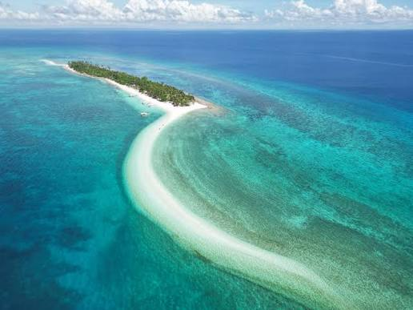
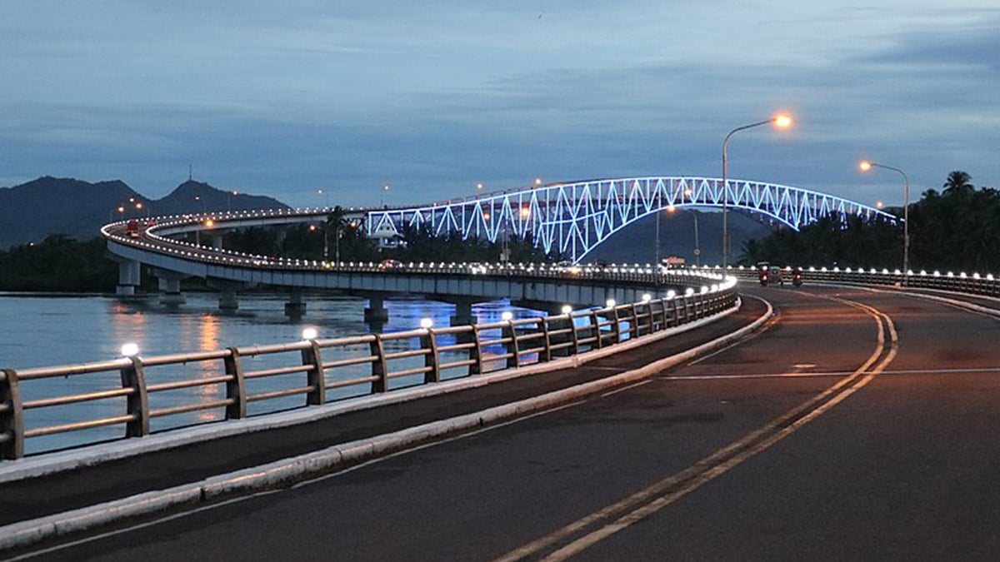
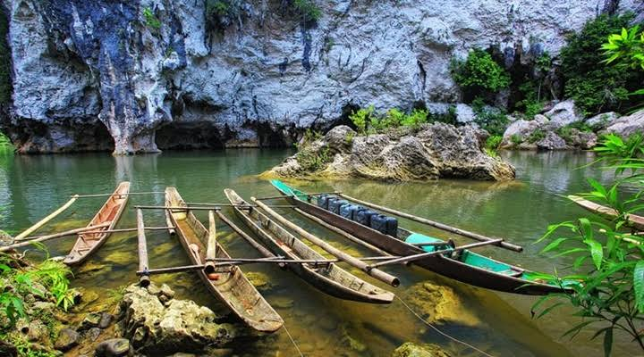

Explore Top Region VIII Destinations
From world-famous white sandbars to majestic cave networks and historic bridges, plan your island stops below.

Must VisitKalanggaman Island
Kalanggaman is world-famous for its pristine, long white sandbar stretching into clear turquoise waters. An unpopulated paradise perfect for swimming, beach camping, kayaking, and day trips.
Book Boat Slot
Iconic LandmarkSan Juanico Bridge
Spanning the San Juanico Strait, this 2.16-kilometer engineering marvel connects Leyte and Samar. Experience breathtaking ocean views during the day and brilliant light shows at night.
Plan Visit
AdventureSohoton Natural Bridge & Caves
A protected national park boasting subterranean rivers, towering limestone archways, and cave systems. Take guided kayak trips through emerald rivers surrounded by untouched jungle.
Reserve Guided Tour